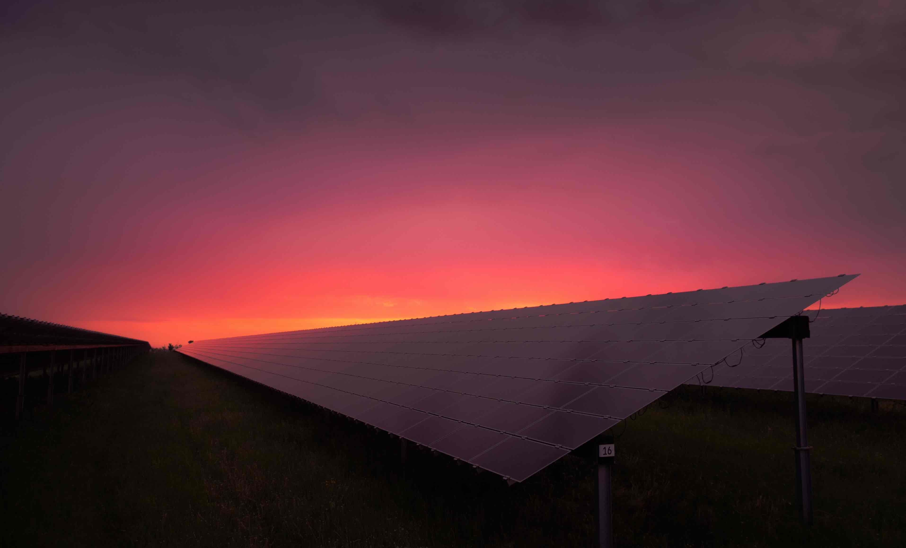
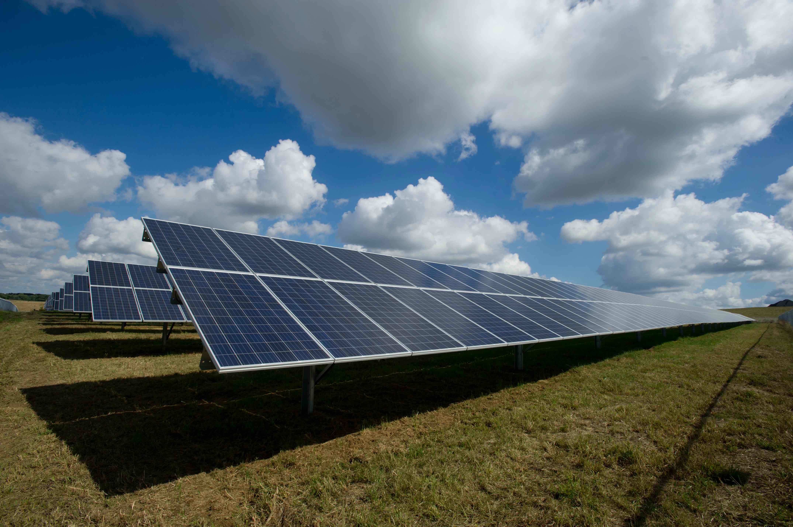
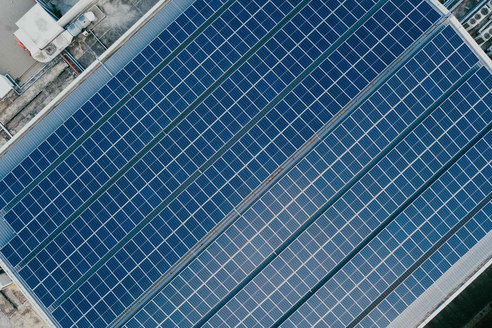
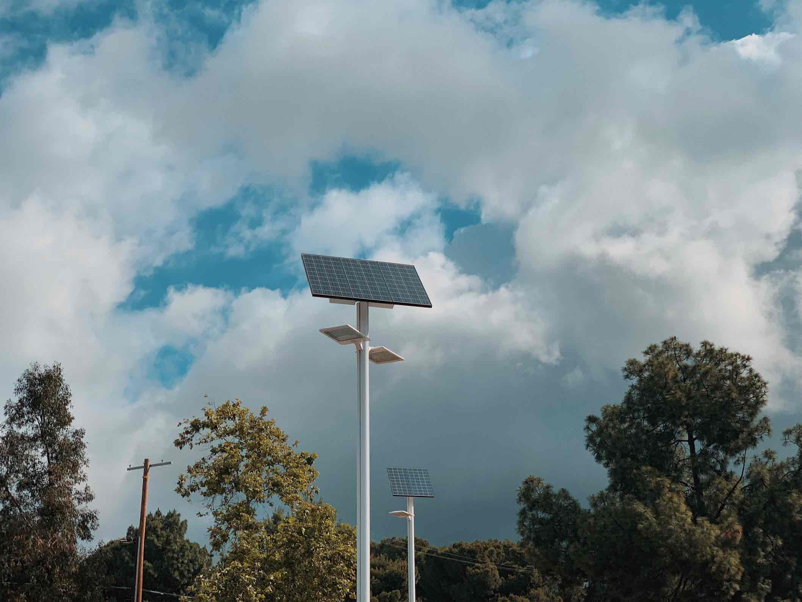
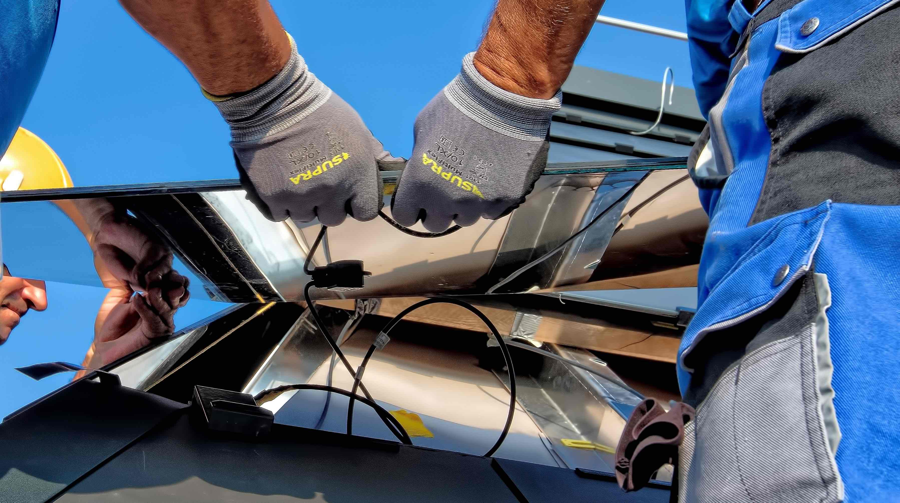
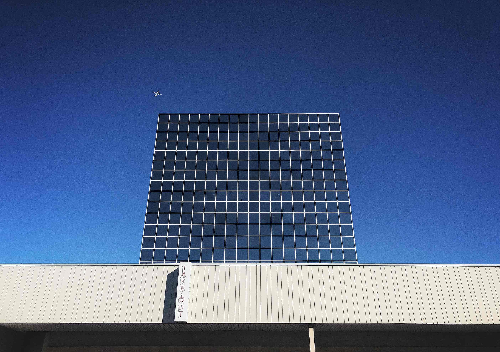

Solar power is power that is generated from the sun – from solar
energy. If you’re looking at installing solar panels on your roof,
you might be wondering how solar power actually works. There are two
ways you can harness the energy of the sun: light and heat
To generate electricity from the sun’s light, we have to take
advantage of a phenomenon called the photovoltaic effect. The photovoltaic effect is where sunlight knocks electrons
loose in certain materials (such as silicon crystals). With
prolonged exposure to sunlight, these loose electrons start to flow
in a circuit. The energy from these moving electrons can be captured
and turned into electricity.
Solar panels use the photovoltaic (PV) effect to generate
electricity from sunlight.
When sunlight hits the PV cells in your solar panels, electrons
are knocked loose and start to move around in a closed circuit.
This is electricity, in its basic form: the electrons flowing
around a circuit in a solar PV panel generate a form of energy
called Direct Current (DC) electricity. This low voltage DC
electricity is then converted into high voltage
Alternating Current (AC) electricity by an inverter (or
inverters) connected to your solar PV panels. This AC electricity
can then be used in your home immediately during the day or stored
in a solar battery for use at night. A common
misconception is that solar PV panels use the sun’s heat to
generate electricity. Conversely,
too much heat can actually reduce the efficiency of your solar
panels.
The perfect conditions for solar panels are a mild, sunny day of
about 25 degrees Celsius. The number of solar panels you have, or
the size of your solar power system, will also dictate how much
electricity you can generate for your home. Solar systems are
sized in kilowatts, and each kilowatt of your system will generate
between 3 and 5 kilowatt-hours (kWh) of energy per day. Generally,
about 3 or 4 solar PV panels make up 1 kilowatt.
There are numerous advantages of using solar power for your
electricity needs. Solar energy benefits not only the health of
the planet but can also help you reduce your energy costs in the
long term.
It’s renewable.
It’s clean and green.
It’s a great way to reduce your energy costs.
You could have power in a blackout
How does solar save you money?
Steward Hill on 05 Jan 2020

If you have solar panels on your home, you’ll be generating your
own electricity to use in your home – for free.
This not only reduces the load on the electricity grid but reduces
your ongoing electricity costs for the lifetime of your solar
system.
During the summer months, while you’re on holiday from work or
school, your energy consumption patterns can also change.
Where you usually may have normally used most of your electricity
in the morning or at night, you now might find your home using
more energy during the day and into the early evening to keep the
house cooler, run the pool pump more often, or with the TV or
computer going more than usual to keep the kids entertained. This
all adds up – especially if you’re pulling power from the grid.
However, with solar panels, you can power your appliances, air
conditioner and your pool pump with clean, green, free solar
power.
The summer months are full of long, hot days, with an average
sunset time in Adelaide of just after 8pm. In summer, your solar
panels will not only generate electricity to cool your home during
the day, but thanks to the extended sunlight hours, your panels
will also keep working into the early evening. This all adds up to
great savings on your electricity bill, at a time when your energy
usage is often high.
The benefits of going solar are more than just environmental: they
can create real, tangible savings for your household
running costs.
How Much Do Solar Panels Cost?
Rodriguez Dawn on 18 Jan 2020

Solar panel cost varies depending on size and type of the system.
Solar tiles are generally more expensive than the traditional
panels. The prices, though, have been falling in recent years, due
to the advancements in solar energy technology. In the table below
you can see the average prices of solar panel systems, as well as,
the estimated cost and return. As noted before, this is just an
attempt to make a broad estimate, since the cost of solar panels
will differ according to quality, type, and size. The average
household needs a 4kW solar system. That solar panel cost will range
from £4000 to £6000 and will cover around 21 square metres of
your roof.
The more electricity your system can generate, the higher the
initial installation cost, but the savings will also be higher in
the long term.
Roof Space (Square meter)
System Size (KW)
Estimated Cost
First Year Return
Profit After 20 Years
8 m2
1 KW
£1,500 - 3,000
£185
£640
14 m2
2 KW
£3,000 - 4,000
£369
£3800
21 m2
3 KW
£4,000 - 6,000
£534
£5,630
28 m2
4 KW
£6,000 - 8000
£700
£6,750
It is safe to say that the installation cost of solar panels isn't
inexpensive. Nevertheless, there are many solar panel facts that
prove that solar energy is a great asset for any house. It is an
asset that after a certain period starts returning money of your
investment.
HOW MUCH DOES A SOLAR BATTERY COST?
Kelly Smith on 20 Feb 2020

Solar battery storage systems can cost anywhere between $8K and $15K
including installation, depending on the battery’s capacity, brand,
functionality, and your ability to access Government incentives or
rebates.
While this can seem like a high initial outlay, it’s important to
consider all the benefits that a solar battery could provide before
you make a decision.
With a battery storage system, you can:
maximise the use of your own solar energy system;
run more of your appliances off your own energy, day and night;
be greener and cleaner in your household’s energy use;
reduce the impact of future electricity price increases on your
household running costs; and
depending on your system setup, have power in a blackout.
What is the payback period for battery storage?
The payback period on battery storage is longer than just a solar
system alone. For a newly installed complete solar energy and
battery storage system, you could expect a payback of between
5-10 years.
If you’ve already got solar panels and you’re looking at
installing a battery as an addition, your payback period will be
longer. This is because the work to deliver a short payback period
is actually done by your solar panels, not the battery itself. You
can, however, still expect all the other benefits that come from
battery storage, like extra protection from rising grid
electricity costs, making the most of your solar energy, and
having power in a blackout.
If you’re not convinced that battery storage is worth the
investment right now, it’s still worth ensuring you install a
solar energy system that is big enough to support a battery for
when you are ready. The cost to go a bit larger on your solar
system now to make sure you have enough excess energy to feed a
battery can be quite small, and you’ll be making sure adding a
battery, later on, is a simple process.
Are solar batteries just for people who want to go off-grid?
No – batteries aren’t just for people who want to go completely
off-grid.
There are some great advantages of having battery storage attached
to your solar power system, while still being connected to the
power grid. Going off-grid is often not a suitable or financially
viable option for most Australian households, as you would need
multiple batteries, a back-up generator and complex rewiring. A
grid-connected or hybrid solar and battery system is often all you
need to take advantage of solar battery storage and save thousands
on your electricity bills while helping to stabilise the grid and
reduce your household’s carbon footprint.
So, are batteries for solar worth it?
The long term benefits of generating your own solar power and
using this 24/7,
instead of drawing from the grid, make battery storage well worth
the upfront costs. With a home battery, you can not only start
saving even more money on your power costs long-term, but you’ll
help to stabilise the energy grid by reducing the load on the grid
at peak times. Your battery will be charged with your free
solar-generated power, ready to supply your home with electricity
day and night – even in a blackout. Your home energy usage will be
cleaner and greener, and you’ll be doing your bit to support a
more sustainable energy future.
WHAT SIZE SOLAR DO I NEED?
Mathew Mensah on 10 March 2020

The size of your solar power system, and therefore the number of
solar panels you need, should be informed by your electricity usage
patterns and what you want to achieve. Solar system sizes are
measured in kilowatts and, depending on where you are and which
direction your roof faces, each kilowatt of your solar panel system
will produce between 3 and 5 kWh of clean, renewable energy per day.
Typically, around 3 to 4 solar panels are needed to make up 1
kilowatt. When it comes to buying your new solar system, don’t make
the mistake of thinking ‘one size fits all’.
Here are three key things to consider when searching for your
perfect size solar system.
Your daily energy usage
The number of solar panels you might need should be
informed by your current energy usage patterns and what you
want to achieve.
The best way to discover your current energy usage patterns is
by reviewing your electricity bills. Collect your past year’s
worth of electricity bills and look for your “average daily
energy use” figure on each of them – it will typically be
shown on the first or second page of the bill, and in
kilowatt-hours or “kWh”. Note this number down for each bill
you have, and then take an average of all of those numbers.
The final number you arrive at will be your typical energy use
over a 24 hour period, including both day and nighttime hours.
Once you have this figure, load it into our simple solar
calculator along with a little more information about you and
your goals, and in seconds you’ll be able to see how many
solar panels you might need.
Sunshine hours
Solar panels need sunlight to function – it’s an obvious rule.
But what buyers often don’t realise is that their home’s
exposure to sunlight, or how many sunshine hours they get, can
have a direct impact on the number of solar panels they will
need.
Your energy goals
The size of the solar energy system you need will also depend
on how much you’re aiming to save on your future electricity
bills. Do you want to just cover your daytime energy needs, or
do you want to add a battery to make yourself almost
completely self-sufficient? Have a clear goal in mind about
how much of your energy requirements you’d like to have
generated by your new solar energy system, and share this goal
with your solar energy system designer.
HOW TO CLEAN SOLAR PANELS
Samuel Payet on 12 March 2020

Clean solar panels are efficient solar panels. Your new solar system
requires very little maintenance, but a clean solar panel is much
more efficient than a dirty or dusty one.
Your solar power system’s output may be reduced if your panels are
covered in dust, dirt or grime. This blocks the sunlight out and
reduces its efficiency. To get the full cost-saving benefit of solar
power, it’s best to keep your panels relatively clean and free of
debris.
Dust, dirt, pollen, bird droppings and leaves can all take their
toll on the performance of your solar system. A regular cleaning can
do wonders to improve its efficiency. Often, natural rainfall will
wash away particles of dust or dirt, but you may still need to give
it a helping hand with your garden hose.
Step-by-step guide to cleaning solar panels.
Shut down your system entirely.
Your system should be completely shut down before cleaning as
per the shutdown procedure listed in your user manual or your
inverter manufacturer’s operating manual. DC Systems will need
to be completely shut down. AC Systems should be shut down via
the Solar Supply Main Switch.
Disconnect or block off any rainwater collections or gutters.
Where rainwater tanks are installed and connected to your
guttering system, have them temporarily disconnected or shut
off from the gutters to ensure no run-off of dirty water goes
into your tank.
Choose a cool, mild time of day.
The combination of hot glass on your panels and cool water can
increase the chance of cracks from a sudden change in
temperature
Clean your panels from the ground if possible.
For safety reasons, it’s wise to clean your panels from the
ground if possible. Use a hose to direct water onto your
panels. Use a hose with a suitable nozzle to allow the stream
of water to reach the panels.
Make sure that you only direct water onto the top of your
solar panels.
Whilst it is ok for some water to touch the back of your
panels, you should not intentionally direct water onto the
back of your panels or into the gap between your panels and
your roof.
For stubborn grime, use a soft cloth and mild soap.
You don’t need to invest in any fancy cleaning solutions: just
water and a mild soap will do the job. A good quality soft
brush and squeegee with a plastic blade on one side and a
cloth-covered sponge on the other, coupled with a long
extension, can make for the perfect tool – and keep you safely
on the ground.
Don’t attempt to climb on your roof without appropriate safety
equipment.
The risk of working on your roof is increased by using water.
A roof can become quite slippery when water is used for
cleaning. If cleaning your panels from the ground is not
possible, do not attempt to access your rooftop unless you
have the appropriate safety equipment and training. For your
safety, it’s best to hire a suitably qualified professional
cleaner instead.
The Most Common Mistakes When Buying Solar
Daniel Herms on 11 April 2020

Thinking a cheap system will perform just as well as a premium
solution
With the proliferation of solar panels across Australia, it’s easy
to think that all solar companies are the same, and that it’s
smartest to just go with the cheapest system you can get. Agreeing
to the cheapest quote you can get may lead you to big problems later
on, and it’s typically those very same systems that come with little
to no after-sales support. Often, cheap solar systems are more
expensive in the long run than paying in the first place for a
premium system from a premium provider. With cheap solar panels, you
often get what you pay for; low quality or poorly installed panels,
faulty inverters, a system that doesn’t deliver on its promises, and
terrible or no after-sales customer service or support. While a
premium solution might be a bigger investment at the start, it will
pay dividends in great energy savings, long-term performance and
ongoing after-sales support.
Thinking ‘one size fits all
Just like a suit or a pair of shoes, a solar system should fit you
and your energy needs perfectly. Your solar energy solution should
be sized carefully according to your current energy usage, the
days and times that you most commonly use energy, your
expectations and goals for reducing your energy bills or your
reliance on the grid, and your plans for the future; will your
family be getting bigger or smaller, or will you want to add a
battery later? The consultant you are speaking to should be able
to not only listen to your answers to these questions, but also
quickly and easily explain how they have taken your future plans
into consideration in their recommendation. If a salesperson is
promising a ‘one size fits all’ approach, cannot explain how their
system is matched to your needs,
or, even worse, doesn’t ask for that sort of information at all,
hang up the phone immediately and try another company.
Not considering the level of after-sales support you’ll receive
Ongoing customer support is critical when it comes to
understanding and operating your solar panels at their maximum
efficiency. Whilst this is important for many larger purchases,
it is critical for solar energy solutions; you are investing in
a product that should have a lifespan in the decades
and has often been selected on the basis of the years of energy
savings it can provide. After-sales service and customer support
is actually one of the most common areas where cheaper providers
cut costs. You might think you’ve found a bargain system with
low-cost installation, but you could end up losing thousands of
dollars more in the long-term in repairs, system maintenance and
inefficient performance. When choosing your solar energy provider,
make sure you look for a company that offers ongoing customer
support for the life of your system. Ask them where their support
team is based and what sort of support they can provide. An
Australian-based customer service centre and a commitment to
customer success will make your renewable energy journey easy.
Your system might cost a little more than overseas, budget
providers, but it’s a valuable investment that can actually save
you money down the track.
Failing to future-proof your system
With a big investment like solar, you want to make sure you’ve
considered any future needs or wants. Most solar energy systems
can be connected to battery storage systems, but there are still a
few extra things you need to consider before making that final
decision. If you are planning on adding a battery now or later,
you may need to add some more solar panels to make sure you can
generate energy for the evenings as well as your daytime needs. If
that is the case, can the company you are talking to explain how
your solar system might need to change or be expanded when you are
ready for that battery? Might it be more cost-effective to
actually add the extra solar panels now so you are ready for the
battery when the time is right? Ask your supplier if your system
has been designed or laid out on your roof in a way that considers
how it might need to be modified should the need arise. Shopping
for your new solar energy system shouldn’t be frustrating,
time-consuming or confusing. There are many companies out there
that offer systems for incredibly cheap prices, misleading
consumers into signing up for a deal that will fail too soon and
cost them huge amounts in the long term. By staying vigilant,
asking the right questions and keeping your future goals in mind,
you can navigate through the search and find your perfect solar
match.